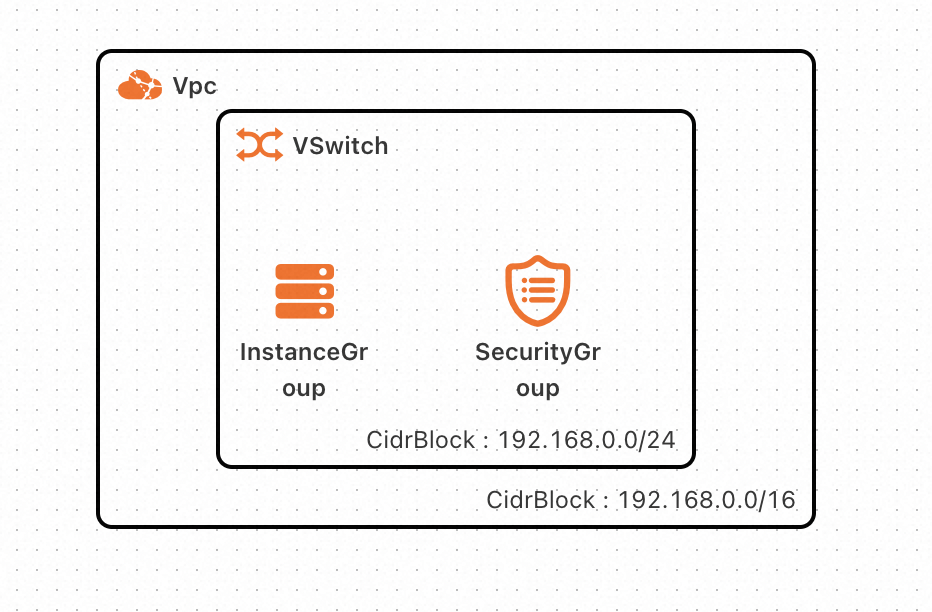

服务模版说明文档
服务说明
一键部署2048小游戏。
本示例对应的Git仓库地址：2048-demo
本示例会自动的构建计算巢服务，具体的服务构建流程为
- 上传文件并构建计算巢文件部署物
- 创建计算巢服务并关联文件部署物
创建过程大约持续2分钟，当服务变成待提交后构建成功。
服务架构
本部署架构单机版为单机ecs部署，通过公网ip 80端口访问 
服务构建计费说明
测试本服务构建无需任何费用，创建服务实例涉及的费用参考服务实例计费说明。
RAM账号所需权限
本服务需要对ECS、VPC等资源进行访问和创建操作，若您使用RAM用户创建服务实例，需要在创建服务实例前，对使用的RAM用户的账号添加相应资源的权限。添加RAM权限的详细操作，请参见为RAM用户授权。所需权限如下表所示：
| 权限策略名称 | 备注 |
|---|---|
| AliyunECSFullAccess | 管理云服务器服务（ECS）的权限 |
| AliyunVPCFullAccess | 管理专有网络（VPC）的权限 |
| AliyunROSFullAccess | 管理资源编排服务（ROS）的权限 |
| AliyunComputeNestUserFullAccess | 管理计算巢服务（ComputeNest）的用户侧权限 |
| AliyunComputeNestSupplierFullAccess | 管理计算巢服务（ComputeNest）的服务商侧权限 |
服务实例计费说明
本服务计算巢上的费用主要涉及：
- 所选vCPU与内存规格
- 系统盘类型及容量
- 公网带宽
计费方式包括：
- 按量付费（小时）
- 包年包月
预估费用在创建实例时可实时看到。
目前提供如下实例：
| 规格族 | vCPU与内存 | 系统盘 | 公网带宽 |
|---|---|---|---|
| ecs.c6.large | 内存型c6，2vCPU 4GiB | ESSD云盘 200GiB PL0 | 固定带宽1Mbps |
| ecs.c6.xlarge | 内存型c6，4vCPU 8GiB | ESSD云盘 200GiB PL0 | 固定带宽1Mbps |
服务实例部署流程
部署参数说明
| 参数组 | 参数项 | 说明 |
|---|---|---|
| 服务实例 | 服务实例名称 | 长度不超过64个字符，必须以英文字母开头，可包含数字、英文字母、短划线（-）和下划线（_）。 |
| 地域 | 服务实例部署的地域。 | |
| ECS实例配置 | 实例类型 | 可用区下可以使用的实例规格。 |
| 网络配置 | 可用区 | ECS实例所在可用区。 |
部署步骤
- 部署链接

- 查看服务实例。服务实例创建成功后，部署时间大约需要1分钟。部署完成后，页面上可以看到对应的服务实例。
- 通过服务实例访问2048，进入到对应的服务实例后，可以在页面上2048的登录网址。
- 打开该链接即可游玩2048了。
© 2009-2022 Aliyun.com 版权所有